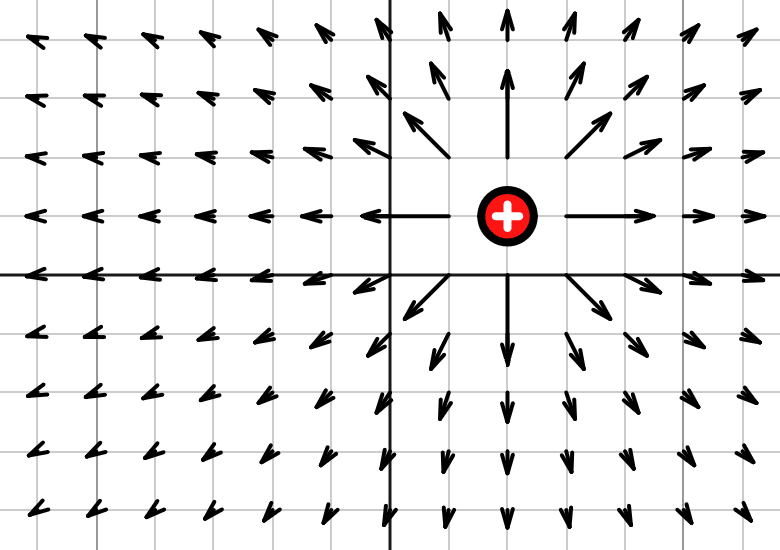

Has math been revolutionized? The new ‘dark’ algebra
A Chicago University mathematician has developed a brand-new algebraic system that could revolutionize math, physics and the entire field of higher algebra as we know it.

The counterfrumentous real symbol | Alphabetia Images 2025
Sam Parks
August 13, 2025
Last week, Chicago University professor of mathematics Erick Lough unveiled a new algebraic system he developed alongside some of the students taking his abstract algebra course over the summer. On August 4 he released a paper titled: A new approach in non-standard set theory: The counterfrumentous reals.
The paper describes a type of math that is closely related to the real numbers, the type of numbers we are most familiar with. The real numbers include whole numbers, negative numbers, fractions and decimals. But what about the counterfrumentous part? Counterfrumentous is a term derived from Latin meaning “Against the grain.” It was coined by Lough to explain how the counterfrumentous reals—nicknamed antireals by Lough’s students—act like a sort of opposite math.
“Essentially, [the antireals] work the same way as reals, but doing math with them gives the exact opposite result,” explains Lough. “Adding two and two in the antireals will give you every number except four, which can tell you something about the answer in the reals.” He then goes on to explain how the system is notated almost exactly the same a normal reals: the numbers are written with the same numerals, math operations with the same symbols, etc. Interestingly, the often-frustrating operation, division by zero, is defined in the system of antireals. Lough explains that any antireal number divided by zero has a value that he represents with the symbol ∅, which is the additive identity of the system.
The additive identity is among the most important properties of an algebraic structure. Just like standard real numbers, the additive identity and other properties like it help the antireals to fulfill all the requirements to be a field: a type of algebra that has addition, subtraction, multiplication and division. This gives the antireals a lot more utility than previous attempts at a similar counterfrumentous-adjacent algebraic system, which insofar have not been able to define a consistent form of multiplication or division.
This system may seem like it could be unwieldy, since simple arithmetic using it often results in a large range of correct answers. But Lough clarifies that the antireals are not intended for simple arithmetic, saying the system of antireal numbers’ “strength is not in their ability to do easy math.” So what should this new system be used for? According to Lough, the antireals “really shine when you use them in functions, especially in vector fields.”
A vector field of a proton’s electric force | Alphabetia Images 2013
Some types of functions, like vector fields, cover all or nearly all of a graph, extending infinitely in all directions. That means it could be hard to find the areas of the function which do not exist, or are not defined. Lough proposes that this is where the counterfrumentous reals could be the most useful, and he is currently developing techniques for using the antireals for these exact situations. Vector fields happen to be one of the most useful concepts in all branches of physics, and new developments could lead to big changes in science.
Lough hopes his new techniques will have a massive impact on the way mathematicians and physicists approach problems like these in the future. Some of Lough’s students are even more hopeful, with one (who chose to remain anonymous) even believing “This breakthrough could be the one we needed to finally prove string theory correct.” So if in the near future you see new developments in the field of physics, that change could have been made possible with the help of the counterfrumentous reals.